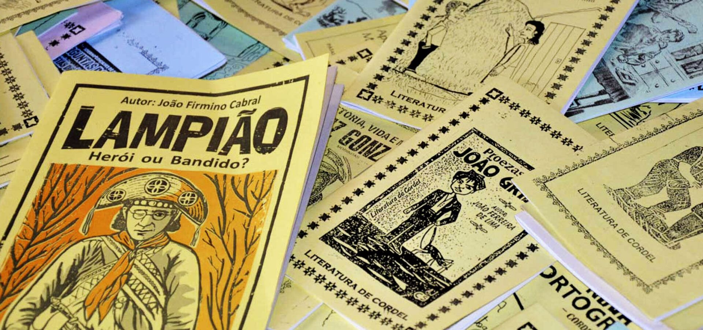
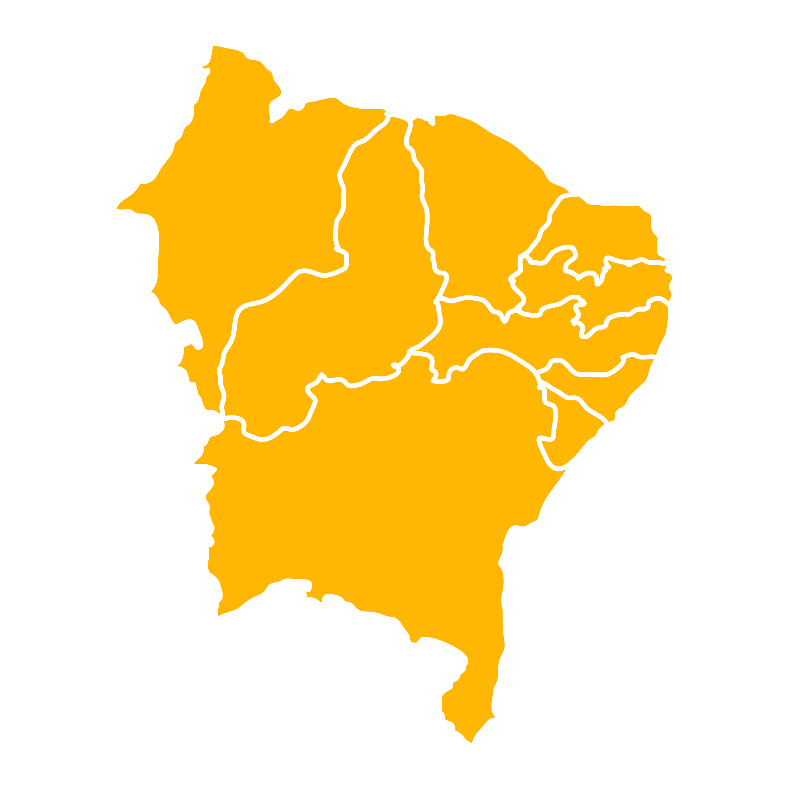

Orgulho de ser e viver o Nordeste
Nascemos do desejo de honrar as nossas raízes e conectar as mais diversas manifestações artísticas, históricas e populares dos nove estados nordestinos. Da literatura de cordel às batidas do maracatu, do sabor do baião ao colorido da chita: aqui, a nossa cultura é viva, diversa e valorizada todos os dias.